West Bengal
- Home
- Food
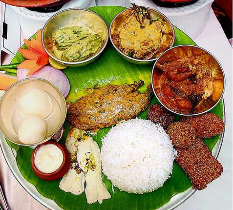
 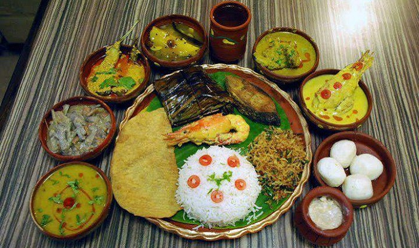
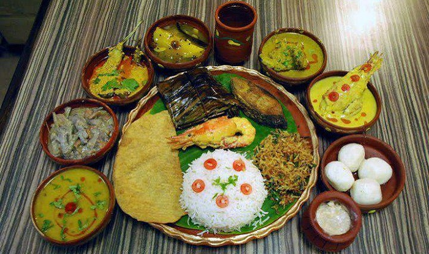
- Fashion
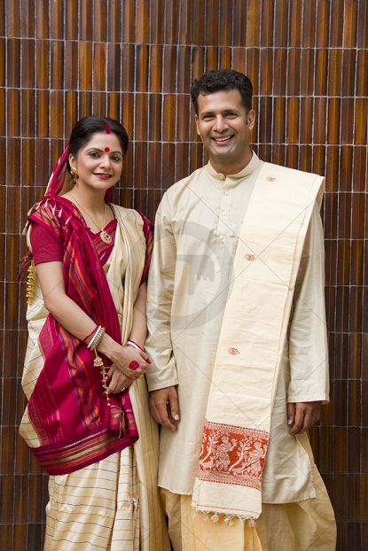 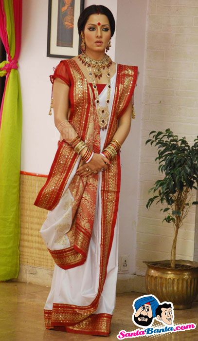 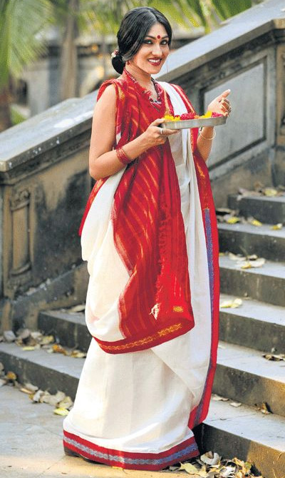 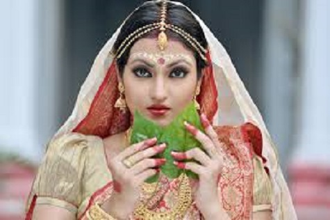
- Festival
- Durga Puja
- Basanta Utsav (Holi)
-
Jamai Sashti
-
Ratha Yatra Kolkata


Ratha Yatra Kolkata
Rathayatra is one of the main festivals in India which is the main festival in Orissa and in West Bengal also the festival is celebrated with splendor and majesty. The festival is a grand fiesta where the holy chariots are pulled by the people. This grand occasion in Hooghly district of West Bengal. This rathayatra attracts thousands of tourists to come and explore the rich heritage of West Bengal.

Jamai Sashti
Jamai Shashti is a day, devoted to the son-in-law. This festival is predominantly celebrated in West Bengal. The day is regarded as auspicious and most of the families organize a party, dedicated to the son-in-law. A grand feast is also organized to mark the occasion. The celebration of this festival is an integral part of the rich culture and tradition of West Bengal. -
Ratha Yatra Kolkata
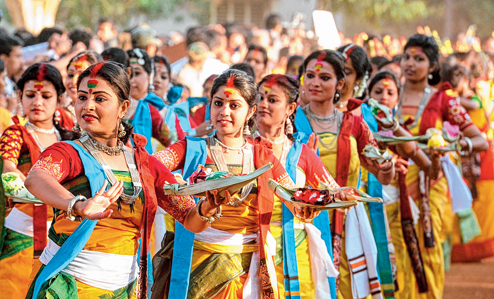 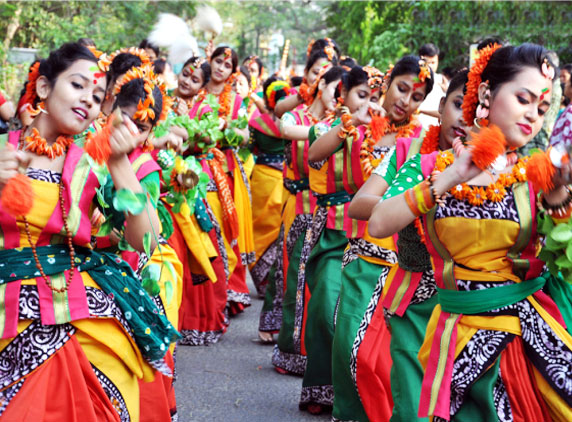Basanta Utsav (Holi)
Festivals add color to life and if it is a festival of colors like Holi one may well imagine how it smudges all souls with joyousness. The famous Indian poet Rabindranath Tagore introduced Basant Utsav or Spring festival in Shantiniketan, Birbhum to recreate the magic of the joyous festival Holi. It is now an integral part of Bengali culture.. -
Jamai Sashti
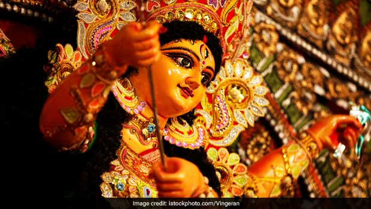 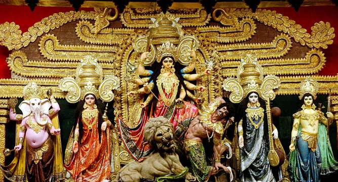 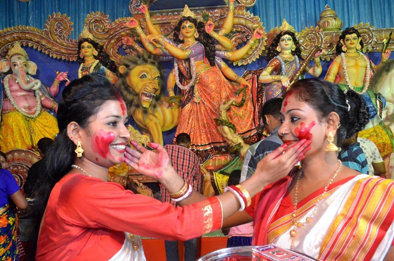Durga Puja
Durga Puja in Kolkata is the largest festival of the year for Bengali Hindus. The festival is a religious occasion to worship Maa Shakti, Durga. It celebrates the victory of Ma Durga over the evil demon Mahishasura. The festival is a grand occasion where ornamented, life-sized idols of Durga are depicted slaying Mahishasura. In large open spaces, elaborate pandals, made of bamboo and cloth, are created to house the idols. The worshipping goes for five days after which in brilliant procession to a local river, the idol is immersed so that they make way to their celestial abode. - Basanta Utsav (Holi)
- Durga Puja